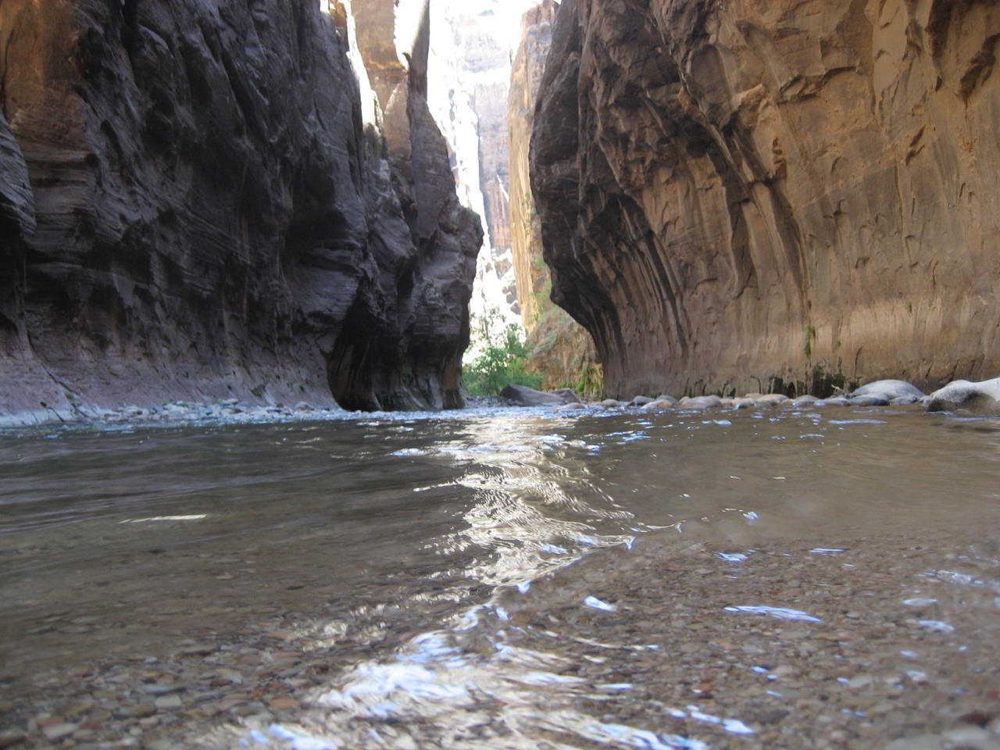
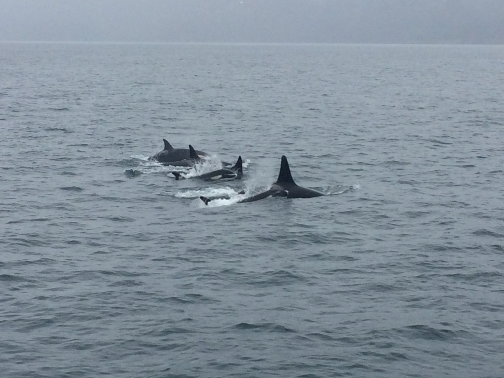
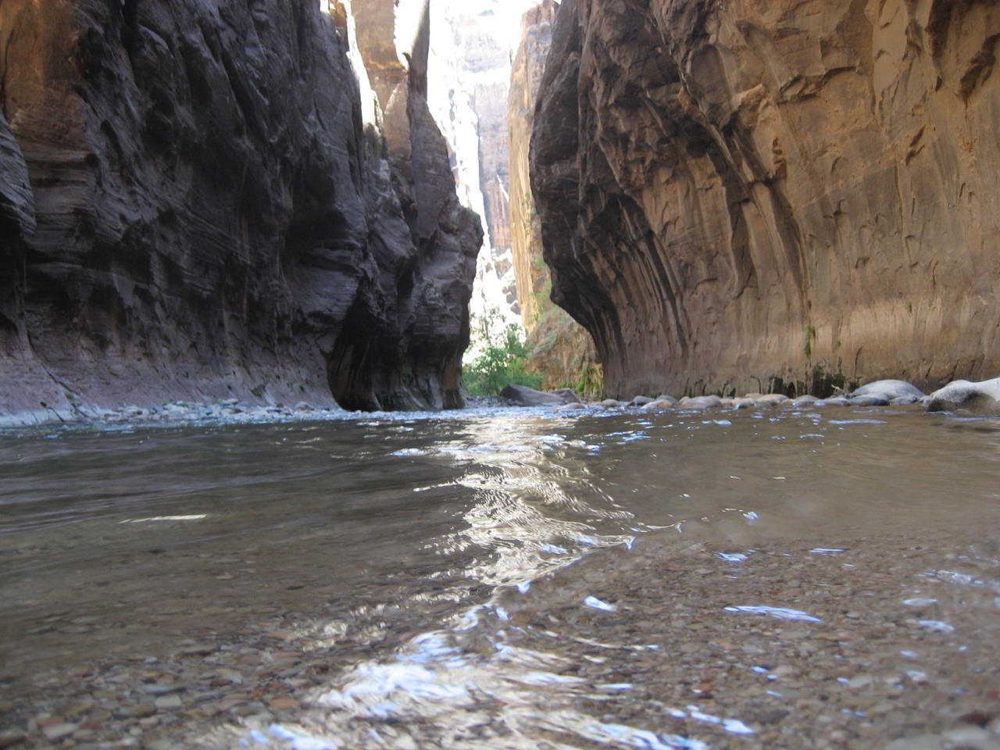
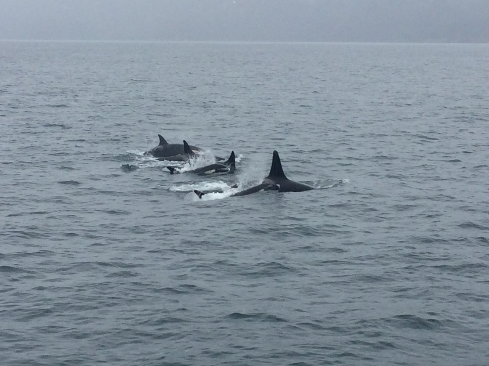

Rio Grande : Los Alamos, NM
Welcome
Current position is a research scientist at Los Alamos National Laboratory in the Earth and Environmental Sciences Division: Geophysics (EES-17) investigating fault mechanics and nonlinear elasticity with the geophysics/machine-learning team.
Current Research
Projects apply machine learning and signal processing to mine information from geophysical time series and extract weak signals.
- Learning fault slip physics and failure (PI)
- The Noise is the Signal: Learning Permeability from Acoustic Emission (PI)
- Generative Model to Denoise Interferometric Synthetic Aperture Radar (PI)
21 Aug 2017 Eclipse : Sawtooth Nat. Forest, ID
About
Christopher W. Johnson is a scientist at LANL in EES-17 and a former Distinguished Feynman Postdoc Fellow. He holds a BS degree from Georgia Tech. Prior to attending university as a non-traditional student, he worked as a diesel technician on heavy diesel trucks, then attended community college before transferring to Georgia Tech. As an undergraduate he was awarded a NSF Graduate Research Fellowship and obtained his PhD at UC Berkeley at the Berkeley Seismological Laboratory. He was awarded a NSF Postdoc Fellowship and split his time between UC San Diego and Uni. of Southern California. He then moved to LANL as a Feynman Fellow.
The overarching research goal is to better understand the mechanistic processes controlling crustal deformation. He has organized multiple field experiments to collect seismic data along active fault zones to characterize a wide variety of signals commonly observed in continuous records but without a known origin. From these opportunities he has developed much experience working with large data sets and applying machine learning to geophysics problems, which is at the center of his research.
Skills
Computing: Python, Matlab, Fortran, C, BASH
Data processing: ObsPy, Tensorflow, SAC, ISCE
Document / Presentation: Adobe, Office platform, Overleaf
Language: English (native), Spanish (can communicate)
Additional: ASE Master Level Technician Medium/Heavy Trucks (2003-2008)
Select images from the field


2019 geophone campaign Tule Canyon and Palomar Mnt


2018 field campaign deploying 400 geophones at Piñon Flat Observatory

2018 San Jacinto Fault Zone seismometer maintence

2017 Dry Wash on San Jacinto Fault Zone. Removal of 5 year temporary seismometer deployment

2013 San Jacinto Fault Zone geochronology survey


2010-2012 GPS campaign around the White Mountains and Fish Lake Valley Fault

2010 Clayton Valley geochronology survey
Scripps Pier : San Diego, CA
Geodesy
InSAR Denoising
Surface Loading and Hydrogeodesy
Atmosphere, hydrosphere, thermal variations, and tides all deform the crust elastically and can modulate the stresses on active faults. Seasonality in these processes provide a repeatable loading source that modualtes the state of stress in the crust. Using geodetic data I characterize the elastic surface loading using GPS and GRACE data to inform deformation models that describe the evolving state of stress in the crust. As time series of continuous data extend to decadal scales these applicatoins can be applied to interannual deformation cycle related to climate variations.
Crustal Stress Modeling
Surface deformation is translated to stress in the crust using Convolutional Neural Network models to describe subsurface transient motions. These models are contrained with InSAR measurements and provide temporal variations in stress. Characterizing fault zones and energy producing reserviors provides constraints to ongoing rate changes in seismicity.
Virgin River : Zion, UT
CV
Appointments
Staff Scientist - Level 3, 2021 - present
Los Alamos National Laboratory
EES-17 Geophysics
Los Alamos, New Mexico
Training
Richard P. Feynman Postdoctoral Fellow, 2020 - 2021
Los Alamos National Laboratory
EES-17 Geophysics
Science Program Office/Applied Energy Program (SPO-AE)
Los Alamos, New Mexico
NSF Postdoctoral Fellow 2017 - 2020
Scripps Institution of Oceanography
Institute of Geophysics and Planetary Physics
University of California, San Diego
NSF Graduate Research Fellowship Program 2012-2017
Ph.D. 2017 Berkeley Seismological Laboratory
University of California, Berkeley, CA
Dissertation: Stress modulation of earthquakes: A study of long and short period stress perturbations and the crustal response
Undergraduate
B.Sc. 2012, Highest Honors, GPA: 4.0
School of Earth and Atmospheric Sciences
Georgia Institute of Technology
Undergraduate Thesis: Measuring Present-Day Strain Rates along the Fish Lake Valley Fault System, Pacific-North America Plate Boundary
Awards and Honors
Feynman Distinguished Postdoctoral Fellowship, 2020-2023
National Science Foundation Postdoctoral Research Fellowship, 2017-2019
Louderback Award, Earth and Planetary Science, UC Berkeley, 2017
National Science Foundation Graduate Research Fellowship Program, 2012-2017
Rutt Bridges Research Initiative Award, Undergraduate initiated research salary, 2011
Presidential Undergraduate Research Award, Undergraduate initiated research salary, 2011
Anadarko/SEG Tuition Scholarship, 2011 – 2012
Georgia Hope Scholar, full tuition scholarship, 2008 – 2011
Invited Talks
Sapienza Università di Roma, Rome, Italy, April 2023
University of Southern California, Los Angeles, CA, March 2023
GFZ, Potsdam, Germany, March, 2023
Univ. of Utah, Salt Lake City, Utah, Nov. 2022
ITU Workshop and Meeting, Artifical Intelligence for Natural Disater Management, Athens, Greece, Oct 2022
GAGE/SAGE 2021 Science Workshop, Virtual, Aug 2021
Purdue University, West Lafayette, IN. August 2021, Virtual Seminar Series
Princeton University, Princeton, NJ. March 2021, Virtual Seminar Series
Berkeley Seismological Laboratory, Berkeley, CA. March 2021, Virtual Seminar Series
ERC Tectonics Virtual Seminar Series. September 2020, Virtual Seminar Series
GAGE/SAGE 2020 Science Workshop, Breckenridge, CO, Aug 2020 CANCELED COVID-19
Japan Geoscience Union Meeting 2020, Chiba, Japan, May 2020 Virtual Conference COVID-19
University of Southern California, Los Angeles, CA, November 2019
Los Alamos National Lab, Los Alamos, NM, July 2019
California Institute of Technology, Pasadena, CA, July 2019
University of Grenoble Alpes, Grenoble, France, June 2019
IGPP, UC SanDiego, San Diego, CA, April 2019
IRIS Workshop 2018, Albuquerque, New Mexico, June 2018
Japan Agency for Marine-Earth Science and Technology (JAMSTEC), Yokohama, Japan, May 2018
Japan Geoscience Union Meeting 2018, Chiba, Japan, May 2018
IGPP, UC SanDiego, San Diego, CA, Feb 2018
Department of Geological Sciences, University of Florida, Gainesville, FL, Feb 2018
American Geophysical Union Fall Meeting 2017, New Orleans, LA, Dec 2017
Institute of Earth Sciences, Academia Sinica, Taipei, Taiwan. Keynote Speaker, Sept 2017
Dept. of Earth Sciences, National Taiwan Normal Univ., Taipei, Taiwan, Sept 2017
Lawrence Berkeley National Lab. Berkeley, CA, July 2017
Computation in Geophysics Workshop. Denver, CO, June 2017
EarthScope National Meeting. Anchorage, AK, May 2017
Department of Geological Sciences, University of Texas at Austin. Austin, TX, April 2017
Strawberry Creek : Berkeley, CA
Collaborators
Yehuda Ben-Zion, Uni. of Southern California, Los Angeles
Harsha S. Bhat, Ecole Normale Supérieure, Paris, France
Adrian Borsa, Uni. of California, San Diego
Roland Bürgmann (PhD Advisor), Uni. of California, Berkeley
Kate Chen, National Taiwan Normal Uni.
Andrew Delorey, Los Alamos Nat. Lab., New Mexico
Carly Donahue, Los Alamos Nat. Lab., New Mexico
Pierre Dutilleul, McGill Uni., Montreal, Canada
Yuning Fu, Bowling Green State Uni., Ohio
Robert Guyer, Los Alamos Nat. Lab., New Mexico
Ryley G. Hill, Los Alamos Nat. Lab., New Mexico
Paul Johnson, Los Alamos Nat. Lab., New Mexico
Debi Kilb, Uni. of California, San Diego
Chris Marone, Sapienza Uni., Rome, Italy
Josefine Umlauft, Universität Leipzig / ScaDS.AI
Frank Vernon, Uni. of California, San Diego
Pod of Orcas : Seward, AK
Publications
2024
[44] Johnson, C. W. & Johnson, P. A. (2024). Seismic features predict ground motions during repeating caldera collapse sequence. Geophysical Research Letters, 51, e2024GL108288. Link
[43] Ueda, T., Kato, A., Johnson, C. W., & Terakawa, T. (2024). Seasonal modulation of crustal seismicity in northeastern Japan driven by snow load. Journal of Geophysical Research: Solid Earth, 129, e2023JB028217. Link
[42] Coblentz, D., J. van Wijk, J. Carmichael, C. Johnson, A. Delorey, C. Chai, M. Maceira, and R. M. Richardson. (2024). New approaches to an old problem: addressing spatial gaps in the World Stress Map. Geological Society, London, Special Publications, 546(1), SP546-2023. Link
2023
[41] Umlauft, J., Johnson, C. W., Roux, P., Trugman, D. T., Lecointre, A., Walpersdorf, A., et al. (2023). Mapping glacier basal sliding applying machine learning. Journal of Geophysical Research: Earth Surface, 128, e2023JF007280. Link
[40] Euser, B., C.W. Johnson, R. Guyer, R., E. Rougier, C.M. Donahue, G. Guthrie, A. Munjiza, P.A. Johnson, (2023) Straining to Find the Permeability Earth and Planetary Science Letters, 610, 118132 Link
2022
[39] P. A. Johnson and C. W. Johnson, (2022) Probing Seismogenic Faults with Machine Learning IEEE International Conference on Image Processing (ICIP), 2022, pp. 2371-2375, doi: 10.1109/ICIP46576.2022.9897239 Link
[38] Wang, K., C.W. Johnson, K.C. Bennett, P.A. Johnson (2022) Predicting future laboratory fault friction through deep learning transformer models Geophysical Research Letters Link & Code
[37] Chen, K.H., T-C. Yeh, Y. Chen, C.W. Johnson, C-H Lin, Y-C Lai, M-H Shih, P. Gueguen, W-G, Huang, B-S Huang, K-C Chen, C-J Lin, and C-S Ku (2022) Characteristics and impact of environmental shaking in the Taipei metropolitan area Scientific Reports 12, 743 . doi: 10.1038/s41598-021-04528-6 Link
2021
[36] Xue, L., Y. Fu, C.W. Johnson, J.J Otero-Torres, C.K. Shum, and R. Bürgmann (2021) Seasonal seismicity in the Lake Biwa region of central Japan moderately modulated by lake water storage changes Journal of Geophysical Research: Solid Earth, 126, e2021JB023301. doi: 10.1029/2021JB023301 Link
[35] Wang, K., C.W. Johnson, K.C. Bennett, P.A. Johnson, (2021) Predicting Fault Slip via Transfer Learning Nat Commun 12, 7319. doi: 10.1038/s41467-021-27553-5 Link
[34] Delorey, A.A., G.H.R. Bokelmann, C.W. Johnson, and P.A. Johnson, (2021) Estimation of the orientation of stress in the Earth’s crust without earthquake or borehole data. Nature Commun Earth Environ 2, 190. doi: 10.1038/s43247-021-00244-1 Link
[33] Johnson, C.W. and P.A. Johnson, (2021) Learning the low frequency earthquake activity on the central San Andreas Fault Geophysical Research Letters, 48, e2021GL092951. doi: 10.1029/2021GL092951 Link
[32] Meng, H., Ben-Zion, Y., Johnson, C.W. (2021), Analysis of seismic signals generated by vehicle traffic with application to derivation of subsurface Q values. Seismological Research Letters; doi: 10.1785/0220200457 Link
[31] Dutilleul, P.R.L., C.W. Johnson, R. Bürgmann (2021) Periodicity Analysis of Earthquake Occurrence and Hypocenter Depth near Parkfield, California, 1994–2002 versus 2006‐2014. Geophysical Research Letters, 48, e2020GL089673. doi.org/10.1029/2020GL089673 Link
[30] Johnson, C.W., Lau, N., Borsa, A. (2021), An assessment of GPS velocity uncertainty Earth and Space Science, 7, e2020EA001345. doi:10.1029/2020EA001345 Link
2020
[29] Dutilleul, P.R.L., C.W. Johnson, R. Bürgmann (2020) Marked spatio-temporal point patterns, periodicity analysis and earthquakes: an analytical extension including hypocenter depth. Environmental and Ecological Statistics, doi:10.1007/s10651-020-00470-4 Link
[28] Snover, D., Johnson, C.W., Bianco, M.J., Gerstoft, P. (2020) Deep clustering to identify sources of urban seismic noise in Long Beach, CA Seismological Research Letters, 1-12, doi: 10.1785/0220200164. Link
[27] Johnson, C.W., Ben-Zion, Y., Meng, H., Vernon, F.L. (2020), Identifying different classes of seismic noise signals using unsupervised learning Geophysical Research Letters, 47. doi:10.1029/2020GL088353 Link
[26] Cheng, Y., Ben-Zion, Y., Brenguier, F., Johnson, C. W., Li, Z., Share, P., Mordret, A., Boué, P., Vernon F.L. (2020) Automated method for developing catalog of small earthquakes using data of dense seismic array and nearby stations.doi:10.1785/0220200134 Link
[25] Johnson, C.W., D. Kilb, A. Baltay, and F. Veron (2020), Peak ground velocity spatial variability revealed by dense seismic array in southern California Journal of Geophysical Research: Solid Earth, 125. doi:10.1029/2019JB019157 Link
[24] Xue, L., C.W. Johnson, Y. Fu and R. Bürgmann (2020) Seasonal seismicity in the Western Branch of the East African Rift System, Geophys. Res. Lett.,47, doi:10.1029/2019GL085882 Link
[23] Johnson, C. W., Y. Fu, and R. Bürgmann (2020), Hydrospheric modulation of stress and seismicity on shallow faults in southern Alaska. Earth and Planetary Science Letters, doi:10.1016/j.epsl.2019.115904 Link
2019
[22] Brenguier, F., Boué, P., Ben-Zion, Y., Vernon, F., Johnson, C. W., Mordret, A., et al. (2019) Train traffic as a powerful noise source for monitoring active faults with seismic interferometry. Geophysical Research Letters. doi:10.1029/2019gl083438 Link
[21] Meng, H., Y. Ben-Zion, C.W. Johnson (2019) Detection of random noise and anatomy of continuous seismic waveforms in dense array data near Anza California. Geophysical Journal International. doi:10.1093/gji/ggz349 Link
[20] Johnson, C.W., H. Meng, F.L. Vernon, and Y. Ben-Zion (2019) Characteristics of ground motion generated by interaction of wind gusts with trees, structures and other obstacles above the surface. Journal of Geophysical Research: Solid Earth, 124. doi:10.1029/2018jb017151 Link
[19] Qin, L., F.L. Vernon, C.W. Johnson, and Y. Ben-Zion (2019) Spectral characteristics of daily to seasonal ground motions using coherences at the Piñon Flats Observatory.Bulletin of the Seismological Society of America doi: https://doi.org/10.1785/0120190070 Link
[18] Johnson, C.W., F.L. Vernon, N. Nakata, and Y. Ben-Zion (2019) Atmospheric Processes Modulating Noise in Fairfield Nodal 5 Hz Geophones. Seismological Research Letters, https://doi.org/10.1785/0220180383 Link
2018
[17] Xu, W., Wu, S., Materna, K., Nadeau, R., Floyd, M., Funning, G., Chaussard, E., Johnson, C.W., Murray, J.R., Ding, X., Bürgmann, R. (2018) Interseismic ground deformation and fault slip rates in the greater San Francisco Bay Area from two decades of space geodetic data. Journal of Geophysical Research: Solid Earth, 123. https://doi.org/10.1029/2018JB016004 Link
[16] Chen, K. H., Tai, H.‐J., Ide, S., Byrne, T., Johnson, C. W. (2018). Tidal modulation and tectonic implications of tremors in Taiwan. Journal of Geophysical Research: Solid Earth, 123. https://doi.org/10.1029/2018JB015663 Link
[15] Xue, L., R. Bürgmann, D.R. Shelly, C.W. Johnson, T. Taira (2018) Kinematics of the 2015 San Ramon, California earthquake swarm: Implications for fault zone structure and driving mechanisms. Earth and Planetary Science Letters, 489. doi.org/10.1016/j.epsl.2018.02.018 Link
[14] M.T. Ramírez-Herrera, K. Gaidzik, S. Forman, V. Kostoglodov, R. Bürgmann, C.W. Johnson (2018) Relating the long-term and short-term vertical deformation across a transect of the forearc in the central Mexican subduction zone. Geosphere; 14 (2): 419–439. doi: https://doi.org/10.1130/GES01446.1 Link
2017
[13] Johnson, C. W., Y. Fu, and R. Bürgmann (2017), Stress models of the annual hydrospheric, atmospheric, thermal, and tidal loading cycles on California faults: Perturbation of background stress and changes in seismicity, Journal of Geophysical Research: Solid Earth, 122. https://doi.org/10.1002/2017JB014778 Link
[12] Han, L., Z. Peng, C.W. Johnson, F.F. Pollitz, L. Li, B. Wang, J.Wu, Q. Li (2017) Shallow microearthquakes near Chongqing, China triggered by the Rayleigh waves of the 2015 M7.8 Gorkha, Nepal earthquake, EPSL, doi:10.1016/j.epsl.2017.09.024. Link
[11] Johnson, C. W., Y. N. Fu, and R. Burgmann (2017), Seasonal water storage, stress modulation, and California seismicity, Science, 356(6343), 1161-1164, doi:10.1126/science.aak9547. Link
[10] Delbridge, B.G, S. Kita, N. Uchida, C. W. Johnson, T. Matsuzawa, and R. Bürgmann (2017), Temporal variation of intermediate depth earthquakes around the time of to the M 9.0 Tohoku-Oki earthquake, Geophysical Research Letters, doi:10.1002/2017GL072876. Link
2016
[9] Johnson,C.W., E.J.Totten, and R. Bürgmann (2016), Depth migration of seasonally induced seismicity at The Geysers geothermal field, Geophys. Res. Lett., 43,6196–6204, doi:10.1002/2016GL069546. Link
[8] Chaussard, E., C. W. Johnson, H. Fattahi, and R. Bürgmann (2016), Potential and limits of InSAR to characterize interseismic deformation independently of GPS data: application to the southern San Andreas Fault system, Geochemistry, Geophysics, Geosystems. Link
2015
[7] Johnson, C. W., and R. Bürgmann (2015), Delayed dynamic triggering: Local seismicity leading up to three remote M≥6 aftershocks of the 11 April 2012 M8.6 Indian Ocean earthquake, J. Geophys. Res. Solid Earth, 120, doi:10.1002/2015JB012243. Link
[6] Dutilleul, P., C. W. Johnson, R. Bürgmann, Y. Wan, and Z.-K. Shen (2015), Multi-frequential periodogram analysis of earthquake occurrence: An alternative approach to the Schuster spectrum, with two examples in central California, J. Geophys. Res. Solid Earth, 120, doi:10.1002/2015JB012467. Link
[5] Chaussard, E., R. Bürgmann, H. Fattahi, C. W. Johnson, R. Nadeau, T. Taira, and I. Johanson (2015), Interseismic coupling and refined earthquake potential on the Hayward-Calaveras fault zone, J. Geophys. Res. Solid Earth, 120, doi:10.1002/2015JB012230. Link
[4] Chaussard, E, R Bürgmann, H Fattahi, RM Nadeau, T Taira, CW Johnson, and I Johanson (2015), Potential for larger earthquakes in the East San Francisco Bay Area due to the direct connection between the Hayward and Calaveras Faults. Geophys. Res. Lett., 42, 2734–2741. doi: 10.1002/2015GL063575. Link
[3] Johnson, C. W., R. Burgmann, and F. F. Pollitz (2015), Rare dynamic triggering of remote M≥5.5 earthquakes from global catalog analysis, Journal of Geophysical Research: Solid Earth, 120, doi:10.1002/2014JB011788. Link
2013
[2] Lifton, Z.M., A. V. Newman, K. L. Frankel, C.W. Johnson, and T. H. Dixon (2013), Insights into distributed plate rates across the Walker Lane from GPS geodesy, Geophys. Res. Lett., 40, doi:10.1002/grl.50804. Link
2012
[1] Foy, T. A., K. L. Frankel, Z. M. Lifton, C. W. Johnson, M. W. Caffee (2012), Distributed extensional deformation in a zone of right-lateral shear: Implications for geodetic versus geologic rates of deformation in the eastern California shear zone-Walker Lane, Tectonics, 31, TC4008, doi:10.1029/2011TC002930. Link
Eureka Dunes : Death Valley, CA
Highlights
EOS Editors' Highlights, Masumi Yamada, Super Dense Array Measurement Magnifies Seismic Wavefields. Published on 5 August 2020. Link
Kornei, K. (2019), Wind-triggered ground shaking masks microseismicity, Eos, 100, https://doi.org/10.1029/2019EO130989. Published on 20 August 2019. Link
Seasonal water changes may trigger earthquakes, UC Berkeley researchers say, Jana Katsuyama, KTVU, 06/16/2017. Link
Something You Probably Didn’t Expect From the Huge Sierra Snowpack: Earthquakes, Craig Miller, NPR station KQED, 06/15/2017 Link
San Andreas Fault Earthquakes Are Triggered by Winter Rain and Snow, Scientists Discover, Hannah Osborne, Newsweek, 06/15/2017 Link
Shifting water weight can trigger small earthquakes in California, Warren Cornwall, Sciencemag, 06/15/2017 Link
Rain and snow help stress out earthquake faults, A little bit, Mary Beth Griggs, Popular Science, 06/15/2017 Link
How Rain and Snow Could Play a Role in Triggering Earthquakes, John Perritano, How Stuff Works, 06/22/2017 Link
Snow and rain tug on earthquake faults in California, Maria Temming, Science News, 07/03/2017 Link
UNAVCO March 2016 Annual Workshop Ingite Talk Link
Outreach
Instructor for Sally Ride Science, UC San Diego Extension
Library NExT Instructor for pre-college classes hosted at San Diego public libraries 2018-2019
Sally Ride Science Junior Academy One-week summer program instructor Summer 2018. Being an instructor for SRS is a rewarding experince that provides the opportunity to interact with middle and high students. We explore topics on geology in California, discuss geophysics and the educational training necessary to pursue careers in science and engineering, and perform experiments to demonstate the basics of faulting and earthquakes.
Birch Aquarium 2018 ShakeOut!
Interact with guests to explain the ShakeOut program and hazards associeted with strong ground shaking
EPS Department Coordinator for Bay Area Science in Schools outreach program organized by Community Resources for Science (crscience.org) from 2015-2017.
Travel to local middle schools, with a focus on underrepresented communities, and give 1-2 hour lessons with a lab component on earthquake faulting, liquefaction, and safety.
Provide professional development seminars for elementary and middle school teachers covering general Earth science and earthquake safety.
Lead activities for the Berkeley Seismological Laboratory outreach program for visitors.